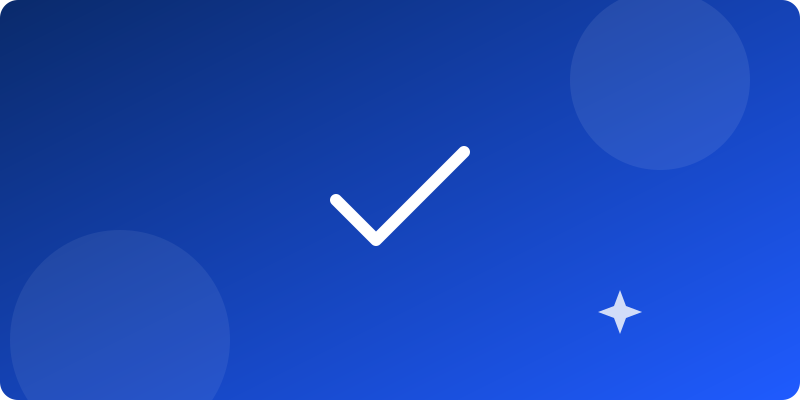

Checklist antes de publicar un artículo

Antes de publicar un texto creado con ayuda de IA, repasa esta lista. Sirve para cualquier artículo, con o sin IA.
La lista
Marca cada punto antes de publicar:
- He comprobado datos, fechas y nombres en fuentes fiables.
- No he incluido información privada o confidencial.
- El texto es original y no copia contenidos de otras webs.
- He añadido mi experiencia, ejemplos o punto de vista.
- He corregido faltas, repeticiones y frases confusas.
- El título y la descripción reflejan lo que cuenta el artículo.
- Las imágenes son propias o tienen licencia adecuada.
- Lo he leído entero como si fuera un lector nuevo.
Cómo usar la IA para la revisión
Puedes pedirle que detecte frases confusas o afirmaciones que deberías verificar, pero la decisión final es tuya.
Un caso práctico
Situación real: terminas un borrador con ayuda de IA. Antes de publicar, comprueba cada afirmación con fuentes y elimina lo genérico.
Consejo útil
Consejo: déjalo reposar unas horas y léelo en voz alta; los fallos de ritmo y las repeticiones se notan al oírlos.
Prompt para copiar
Revisa este texto como un editor: señala frases confusas, afirmaciones que necesiten una fuente y repeticiones. No reescribas, solo comenta: [TEXTO]
Errores que debes evitar
- Publicar sin verificar datos.
- Dejar frases genéricas que no aportan nada.
Recuerda: la IA puede equivocarse. Verifica los datos importantes en fuentes fiables antes de usarlos.
Conclusión
Una revisión final cuesta pocos minutos y evita la mayoría de errores.